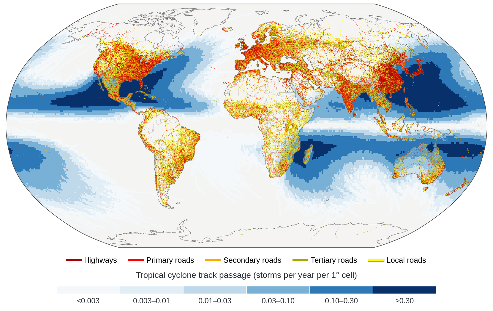
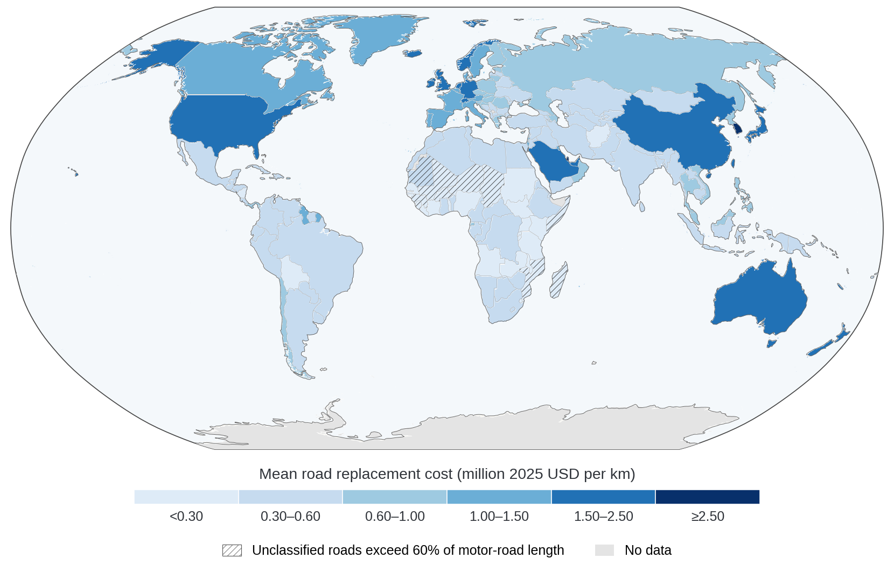
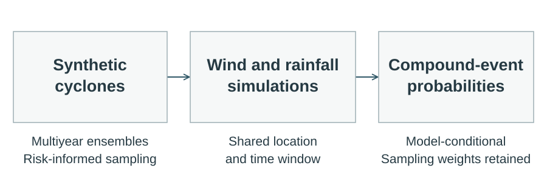
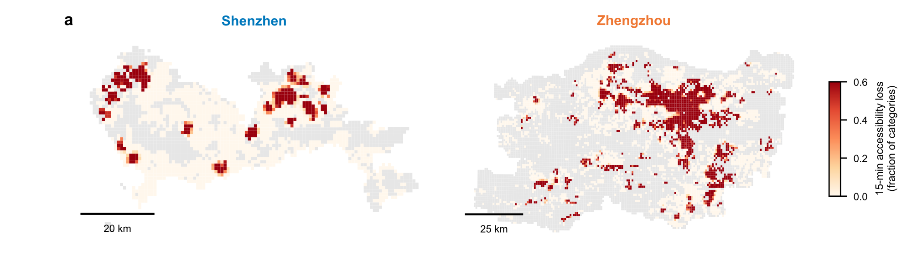
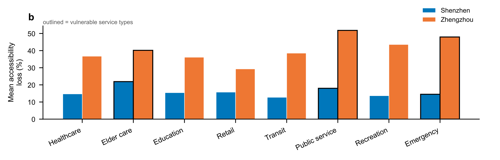
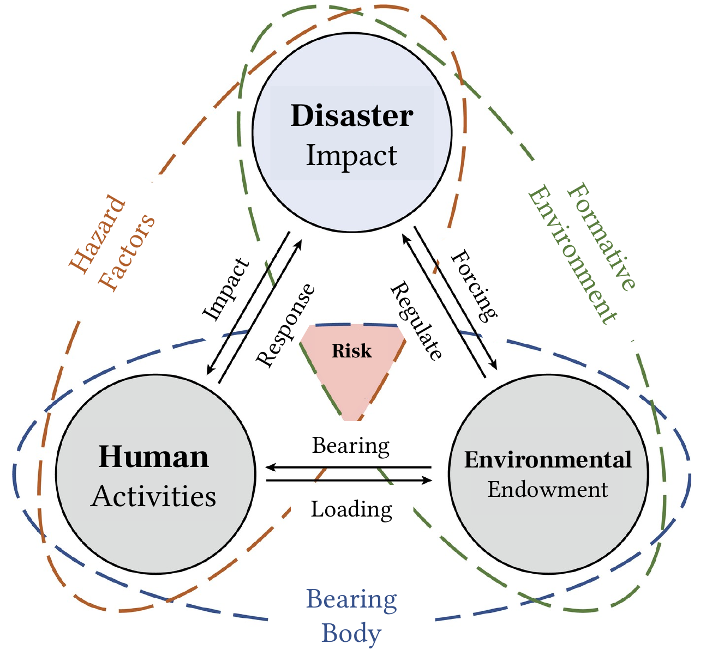
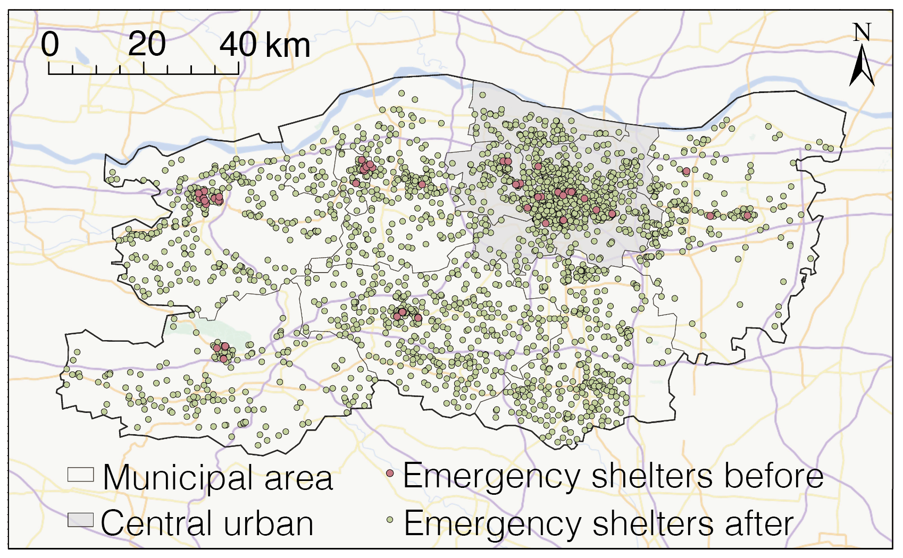

Peking University
M.Sc. in Territorial Spatial Planning
GPA: 3.84 / 4.0
Shenzhen, China
Sep 2024 – Present
I am a master’s student in Territorial Spatial Planning at the School of Urban Planning and Design, Peking University, advised by Dr. Junqing Tang. I received my bachelor’s degree in Urban Management from Nankai University and was an exchange student in Urban Studies at the University of Glasgow.
My research examines the coupled relationships between human activity, urban space, and disaster risk. I study how compound hazards affect critical infrastructure and how infrastructure disruption interacts with human mobility and protective responses. This question connects my work on global road systems, urban healthcare provision, neighborhood accessibility, and disaster early warning.
I combine physics-based hazard simulation and probabilistic risk modeling with large-scale mobility data and geospatial analysis. My current work includes generating synthetic commuting flows, modeling tropical cyclone wind–rain hazards under climate scenarios, and developing StormTailor to investigate compound-event probabilities. Alongside these studies, I explore the theoretical foundations of human–environment–disaster relationships. I am particularly interested in using urban analytics and GeoAI to connect climate extremes, infrastructure performance, and human responses to inform climate adaptation and disaster risk reduction.
M.Sc. in Territorial Spatial Planning
GPA: 3.84 / 4.0
Shenzhen, China
Sep 2024 – Present
Sep 2020 – Jun 2024
Exchange Student in Urban Studies
GPA: 18.3 / 22.0 · First-Class
Glasgow, United Kingdom
Sep 2022 – Jun 2023
Acta Geographica Sinica · 2026 · In Chinese · Under review
In preparation
In preparation
Model development
In preparation
Journal of Transport Geography · 2026 · Major revision
Journal of Natural Disasters · 2026 · In Chinese · Minor revision
Progress in Geography · 2026 · 45(4), 683–694 · In Chinese
Nature Sustainability · 2026
Transport Policy · 2026 · 180, 104029
Journal of Geo-information Science · 2025 · 27(3), 553–569 · In Chinese
Journal of Catastrophology · 2024 · 39(4), 125–130 · In Chinese
Resilient Cities under Global Climate Change: From Principles to Applications · 2026 · Chapter 11 · Edward Elgar Publishing
I investigate how compound tropical cyclone hazards reshape physical road damage and commuting disruption across the world’s urban systems. I generate synthetic commuting origin–destination flows with GlODGen and cyclone tracks from CMIP6 climate environments, then link C15–TCR wind–rain simulations with road asset valuation and network assignment. The study examines where asset losses, disconnected journeys, and rerouting pressures differ, and how these patterns may shift in a warming climate.
Hazard simulation, synthetic mobility, and network risk assessment · In preparation


I developed StormTailor to link a reproducible, multiyear synthetic cyclone generator with regional wind and rainfall models. The framework investigates risk stratification and importance sampling for estimating compound-event probabilities. It identifies wind and rainfall extremes at shared locations and time windows, carries sampling weights into model-conditional probability estimates, and compares physical simulations with historical storms and public observations in Hong Kong.
Physical modeling, sampling design, and probability estimation · Model development

I assess older-adult exposure, potential hospital asset losses, and healthcare supply mismatches under tropical cyclone winds across 52 Chinese coastal cities. The analysis combines cyclone wind fields with population and hospital data to examine how climate change and population aging jointly reshape risk. Under SSP5-8.5, annual hospital asset losses are projected to more than double, while climate change amplifies aging-driven exposure growth by 19.7–32.8%.
Risk assessment and climate–demographic scenarios · Under review
I investigate how the spatial distribution of everyday services, flood-induced network disruption, and human mobility jointly shape neighborhood access. Comparing Shenzhen and Zhengzhou, I combine pedestrian-network accessibility models with mobile-phone origin–destination data to distinguish potential access losses from observed changes in arrivals at service-containing neighborhoods.
Neighborhood accessibility and observed mobility · In preparation


How do warning timing and urban spatial organization shape protective responses? We compare hourly, 1-km mobile-phone origin–destination flows in Shenzhen during Typhoon Mangkhut and Zhengzhou during the July 2021 rainstorm. The study examines response delays, mobility suppression, and proximity to emergency shelters. I process the mobility data, construct agent-based models of information diffusion and behavioral response, and revise the manuscript, investigating how the population’s initial distribution between home and work affects shelter-in-place and movement patterns.
Data processing, agent-based modeling, and manuscript revision · In preparation
I explore the geographical foundations of urban resilience by treating disaster risk as an endogenous constraint on human–environment relationships. This theoretical work examines how human activities, environmental endowments, and disaster impacts interact, and uses the 2021 Zhengzhou flood to discuss how adaptation and risk constraints reshape urban systems.
Theoretical research · Published in Progress in Geography


I reconstructed Typhoon Mangkhut’s wind and rainfall evolution with ER11 and GMCP and processed 2.5 billion mobile-phone records to examine coastal–inland differences in urban response. My collaborative work also addresses shelter demand–supply mismatches across 21 cities using GHS-SMOD, an interactive emergency resource allocation system, and dynamic Bayesian network–ARIMA models of resilience trajectories across nine Pearl River Delta cities.
Collaborative research at Peking University
Oral presentation · 13th International Conference on Population Geographies · Nanjing, China
Jun 2026
Oral presentation · Spring Annual Meeting of the Geographical Society of China · Chongqing, China
Apr 2026
Committee Member, Sub-Society for Postgraduate Students, Geographical Society of China
2025 – Present
First Prize, 10th Chengyuan Cup Planning Decision Support Model Design Competition
2026
Second Prize, Peking University Academic Science & Technology Competition
2026
Second Prize, Peking University Academic Science & Technology Competition
2025
Third Prize, Esri Cup China University GIS Software Development Contest
2025
National Second Prize, Undergraduate Innovation & Entrepreneurship Training Program
2024
Outstanding Undergraduate Thesis, Nankai University
2024
Outstanding Graduate, Nankai University
2024
Huadan Scholarship in Political Science, Nankai University
2024
First-Class Scholarship, Nankai University
2023
Tianjin Municipal Government Scholarship
2022
First-Class Scholarship, Nankai University
2021
Programming & web developmentPython (NumPy, pandas, GeoPandas, Rasterio, xarray, scikit-learn) · JavaScript · HTML/CSS
GIS & modelingArcGIS · GeoScene Pro · QGIS · CLIMADA · GeNIe Modeler
Development & typesettingGit/GitHub · LaTeX